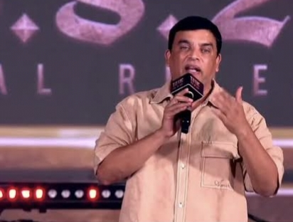
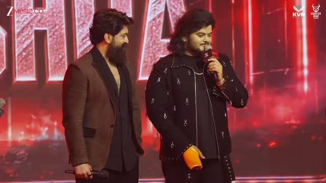

యశ్ నటించిన మోస్ట్ అవైటెడ్ పాన్ ఇండియా మూవీ ‘టాక్సిక్: ఎ ఫెయిరీ టేల్ ఫర్ గ్రోన్-అప్స్’ విడుదలకు ముందు హైదరాబాద్లో జరిగిన ప్రీ-రిలీజ్ ఈవెంట్ భారీగా జరిగింది. ఆగస్టు 22న మల్లారెడ్డి యూనివర్సిటీలో జరిగిన ఈ కార్యక్రమానికి యశ్తో పాటు తెలుగు రిలీజ్కు సంబంధించిన నిర్మాత దిల్ రాజు, సంగీత దర్శకుడు విశాల్ మిశ్రా తదితరులు హాజరయ్యారు. ఆగస్టు 26న సినిమా ప్రపంచవ్యాప్తంగా ప్రేక్షకుల ముందుకు రానుండటంతో ఈ వేడుకలో చేసిన వ్యాఖ్యలు ఇప్పుడు టాలీవుడ్లో హాట్ టాపిక్గా మారాయి.
యశ్ ఏమన్నారు?
‘కేజీఎఫ్’, ‘కేజీఎఫ్ 2’ తర్వాత యశ్ నుంచి వస్తున్న సినిమా కావడంతో ‘టాక్సిక్’పై దేశవ్యాప్తంగా భారీ అంచనాలు ఉన్నాయి. ఈ సినిమా కోసం తాను, దర్శకురాలు గీతూ మోహన్దాస్, మొత్తం టీమ్ ఎంతో కష్టపడ్డామని యశ్ చెప్పుకొచ్చారు. ముఖ్యంగా సినిమాను కేవలం ఒక భాషకు పరిమితం చేయకుండా ప్రపంచ స్థాయిలో ప్రేక్షకులకు చేరేలా రూపొందించినట్లు తెలిపారు.
తెలుగు ప్రేక్షకులపై యశ్కు ఉన్న ప్రత్యేక అనుబంధాన్ని కూడా ఈ సందర్భంగా ప్రస్తావించినట్లు తెలుస్తోంది. ‘కేజీఎఫ్’ సినిమాల నుంచి తెలుగు రాష్ట్రాల్లో తనకు లభించిన ప్రేమను ఎప్పటికీ మర్చిపోలేనని ఆయన చెప్పినట్లు ఈవెంట్కు సంబంధించిన ప్రచారంలో వెల్లడైంది.
అంతేకాదు, ‘టాక్సిక్’ విషయంలో తనకు కేవలం కలెక్షన్ల కంటే సినిమా ప్రేక్షకులకు ఎలా అనిపిస్తుంది అన్నదే ముఖ్యమనే అభిప్రాయాన్ని యశ్ వ్యక్తం చేశారు. భారీ స్థాయిలో తెరకెక్కిన ఈ సినిమా ప్రేక్షకులకు కొత్త అనుభూతిని ఇస్తుందని టీమ్ నమ్మకంగా ఉంది.
దిల్ రాజు మాటల్లో భారీ అంచనాలు

‘టాక్సిక్’ తెలుగు హక్కులను దిల్ రాజు సొంతం చేసుకున్న విషయం తెలిసిందే. ఈ నేపథ్యంలో ఈవెంట్లో ఆయన చేసిన వ్యాఖ్యలు ప్రత్యేకంగా నిలిచాయి. యశ్ భారతీయ సినీ పరిశ్రమలోని పెద్ద స్టార్స్లో ఒకరని, ‘కేజీఎఫ్ 2’ తర్వాత ఆయన మార్కెట్ మరింతగా పెరిగిందని దిల్ రాజు గతంలోనే పేర్కొన్నారు. నాలుగేళ్ల తర్వాత యశ్ సినిమా వస్తుండటంతో ప్రేక్షకుల్లో ఉన్న క్రేజ్ను కూడా ఆయన ప్రస్తావించారు.
తాజా ఈవెంట్లో ‘టాక్సిక్’కు హైదరాబాద్ నుంచి మంచి ఓపెనింగ్ రావాలని దిల్ రాజు ఆశాభావం వ్యక్తం చేశారు. ముఖ్యంగా ‘యానిమల్’ తరహాలో హైదరాబాద్ మార్కెట్ నుంచి బలమైన ప్రారంభం రావాలని ఆయన ఆకాంక్షించారు.
అయితే అందరి దృష్టిని ఆకర్షించిన మరో విషయం ₹2,000 కోట్ల కలెక్షన్. సంగీత దర్శకుడు విశాల్ మిశ్రా ‘టాక్సిక్’ భారీ స్థాయిలో వసూళ్లు సాధించే అవకాశం ఉందని, ₹2,000 కోట్ల మార్క్ను అందుకోవచ్చని అంచనా వేసిన విషయాన్ని దిల్ రాజు ప్రస్తావించారు. విశాల్ చెప్పిన మాట నిజం కావాలని తాను కోరుకుంటున్నానని అన్నారు.
అయితే ₹2,000 కోట్లు అనేది ప్రస్తుతం ఒక అంచనా మాత్రమే. సినిమా విడుదలైన తర్వాత ప్రేక్షకుల స్పందన, మౌత్ టాక్, అన్ని భాషల్లో వసూళ్లు ఎలా ఉంటాయన్నదే అసలు ఫలితాన్ని నిర్ణయిస్తుంది.
విశాల్ మిశ్రా సంగీతంపై యశ్ ప్రశంసలు

‘టాక్సిక్’కు సంగీతం అందించిన విశాల్ మిశ్రా కూడా ఈ వేడుకలో ప్రత్యేక ఆకర్షణగా నిలిచారు. సినిమాలోని పాటలు ఇప్పటికే ప్రేక్షకుల్లో ఆసక్తిని పెంచుతున్నాయి. ముఖ్యంగా ‘తబాహీ’ పాటకు మంచి స్పందన వచ్చినట్లు చిత్రబృందం ప్రకటించింది.
విశాల్ మిశ్రా పనితీరుపై యశ్ గతంలోనే ప్రశంసలు కురిపించారు. ఆయనను తన ‘లిటిల్ బ్రదర్’ అంటూ పిలుస్తూ, ప్రతి పాటను ఎంతో హృదయపూర్వకంగా అందించారని ప్రశంసించారు. ‘టాక్సిక్’ సంగీతానికి విశాల్ ఎంతో కష్టపడ్డారని యశ్ చెప్పిన మాటలు సోషల్ మీడియాలో కూడా వైరల్ అయ్యాయి.
రిలీజ్కు ముందే భారీ హైప్
ఇక సినిమా విడుదలకు ముందే అడ్వాన్స్ బుకింగ్స్ కూడా మంచి జోష్లో ఉన్నాయి. ఆగస్టు 22 నాటికి ‘టాక్సిక్’ ఇండియాలో అడ్వాన్స్ బుకింగ్స్ ద్వారా సుమారు ₹10.94 కోట్ల గ్రాస్ సాధించినట్లు, బ్లాక్ చేసిన సీట్లను కలుపుకుంటే మొత్తం అంచనా ₹18 కోట్లకు పైగా ఉందని నివేదికలు చెబుతున్నాయి.
ఇలాంటి పరిస్థితుల్లో హైదరాబాద్ ప్రీ-రిలీజ్ ఈవెంట్లో దిల్ రాజు చెప్పిన ₹2,000 కోట్ల అంచనా అభిమానుల్లో మరింత ఆసక్తిని పెంచింది. అయితే ఆ టార్గెట్ను సినిమా అందుకోవాలంటే అన్ని భాషల్లోనూ భారీ ఓపెనింగ్తో పాటు పాజిటివ్ టాక్ రావాల్సి ఉంటుంది.
మొత్తంగా చూస్తే.. యశ్ క్రేజ్, గీతూ మోహన్దాస్ దర్శకత్వం, భారీ నిర్మాణ విలువలు, విశాల్ మిశ్రా సంగీతం, దిల్ రాజు తెలుగు రిలీజ్ బాధ్యతలు—ఇవన్నీ కలిసి ‘టాక్సిక్’పై అంచనాలను మరింత పెంచాయి. ఇప్పుడు ఈ భారీ అంచనాలను సినిమా ఎంతవరకు అందుకుంటుందో తెలుసుకోవాలంటే ఆగస్టు 26 వరకు వేచి చూడాల్సిందే.